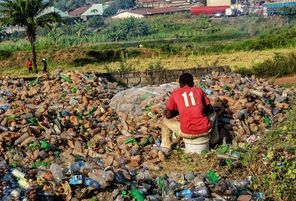

Waste Reduction Tips
In today's world, waste reduction is more critical than ever to mitigate environmental damage and promote sustainability. Here are some effective waste reduction tips:
- Reduce Single-Use Items: Opt for reusable alternatives to single-use products such as water bottles, shopping bags, and coffee cups.
- Compost Organic Waste: Create a compost bin for food scraps and yard waste to reduce landfill contributions and produce nutrient-rich soil for gardening.
- Donate or Recycle: Instead of throwing away items in good condition, donate them to charity or recycle them properly to extend their lifecycle.
- Minimize Packaging: Choose products with minimal packaging or packaging made from recyclable or biodegradable materials.
- Practice Precycling: Avoid purchasing unnecessary items and packaging by planning purchases and buying in bulk.
- Upcycle Old Items: Get creative and repurpose old items into new and useful products rather than discarding them.
- Participate in Community Cleanup: Join local cleanup events to help remove waste from natural environments and raise awareness about waste reduction.
By implementing these waste reduction tips into your lifestyle, you can contribute to a healthier planet and inspire others to adopt sustainable practices.